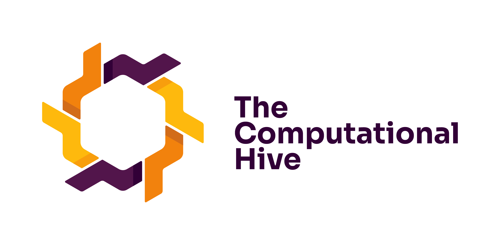
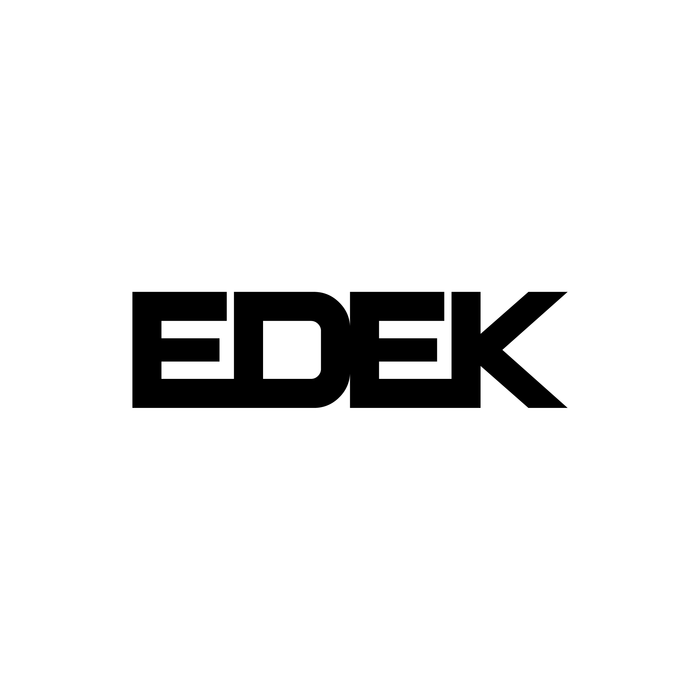
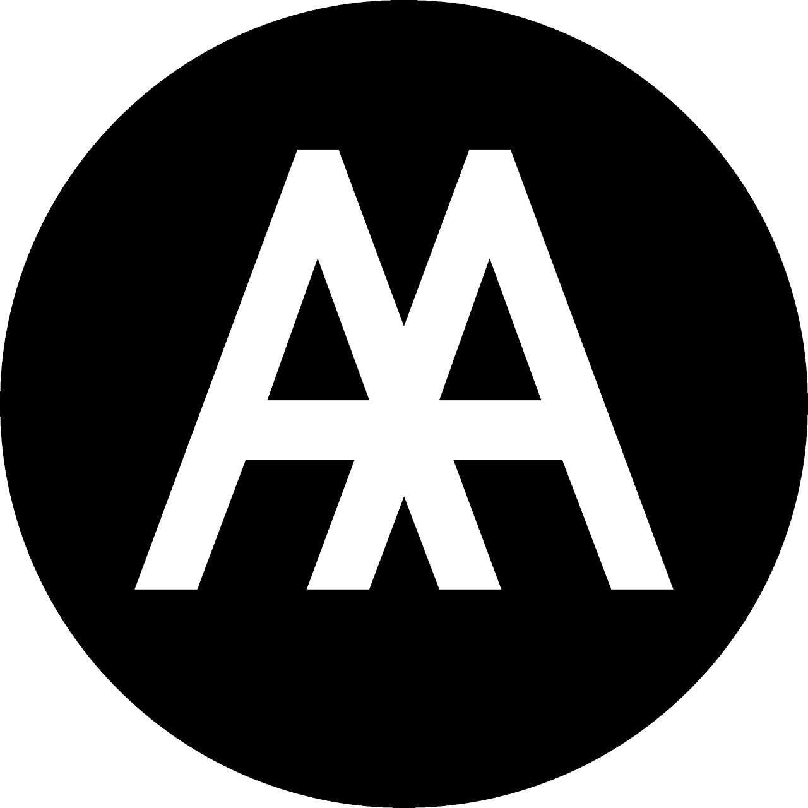

Material Bank
Shared inventory for reclaimed parts, properties, and reuse potential.
Combinatorial material reuse for a temporal city: a design-build laboratory working with urban material ecologies, fast digitization, Wasp aggregation, and augmented construction interfaces.

Seoul is treated as a material resource shaped by temporary use, informal occupation, retail logistics, and continuous transformation. Students will work with reclaimed and readily available parts, turning irregularity and variation into design drivers.
The workshop moves from scouting and fast capture to rule-based aggregation and physical prototyping. Instead of chasing perfect scans, the focus is useful geometric data: bounding dimensions, connection interfaces, material behavior, and assembly constraints.
These workshop tools will support material mapping, inventory building, combinatorial design, and augmented assembly. Urban Mining Map and Wasp Atlas are currently connected.
Field notes and material sightings from Seoul's urban material ecology.
Shared inventory for reclaimed parts, properties, and reuse potential.
Explore parts, aggregation logic, and workshop-ready Wasp resources.
Augmented-reality interface for guided assembly and site coordination.
The unit combines computational workflows with hands-on construction, culminating in reversible prototypes and spatial installations embedded in Seoul's everyday urban life.



Architectural Association Yonsei University
Yonsei University